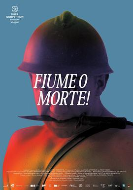

邓南遮占领阜姆自由邦 / Fiume o morte!
又名：Fiume O Morte!
扮演邓南遮穿帮的笑场，进阜姆时乐队的演奏，无不试图将观众从历史叙事中间离出来，告诉他们这只是演员的日常并非过去的灾难。拍摄很有创意，但困在了平铺直叙中，缺少对法西斯一定的批判。
作品信息
| 导演 | 伊戈尔·贝齐诺维奇 |
| 编剧 | 伊戈尔·贝齐诺维奇 |
| 主演 | Andrea Marsanich / Albano Vucetic / Tihomir Buterin / Izet Medosevic / Milovan Vecerina Cico / Massimo Ronzani / Lovro Mirth / Silvana Zorich / Noemi Dessardo / Sandro Ferletta / Renzo Chiepolo / Sara Marsanich / Goran Pavlic / Nikola Tutek / Cenan Beljulji / Tonka Mršić |
| 类型 | 纪录片 / 历史 |
| 制片国家/地区 | 克罗地亚 / 意大利 / 斯洛文尼亚 |
| 语言 | 克罗地亚语 / 意大利语 |
| 上映日期 | 2025-02-02(鹿特丹电影节) |
| 片长 | 112分钟 |
| IMDb | tt34383611 |
说过什么
2025-09-21 23:06:25
广播 · 看过 · ★★★★☆
扮演邓南遮穿帮的笑场，进阜姆时乐队的演奏，无不试图将观众从历史叙事中间离出来，告诉他们这只是演员的日常并非过去的灾难。拍摄很有创意，但困在了平铺直叙中，缺少对法西斯一定的批判。
最后一次看到是 2026-10-07T23:13:03+08:00 · 豆瓣原页